|
1. La captación de agua Texto del DOGV nº 3261 del 10-06-1998 (ver texto completo) |
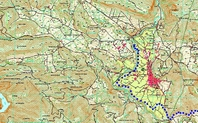 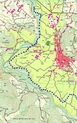 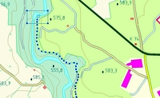 |
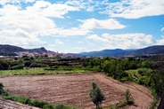 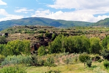 |
| Tuéjar: el pueblo y su valle (montañas, bosques, zonas recreativas, senderismo, naturaleza,...). |
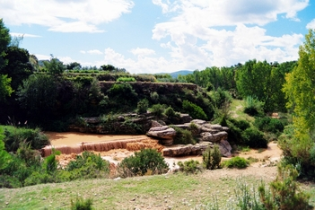 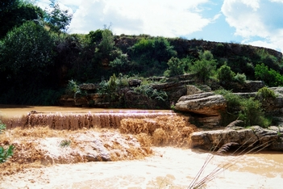 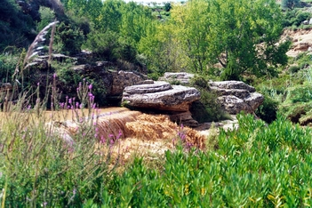 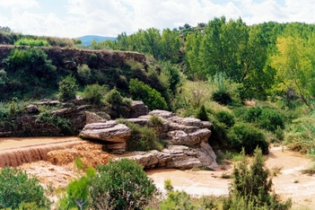 |
| Acceso al dique o azud: girar a la derecha por el primer camino (de tierra) que encontramos en la recta de acceso al pueblo de Tuéjar (tras la primera nave industrial, ver mapa) desde la carretera C-234 (ó CV35, pista de Ademuz). |
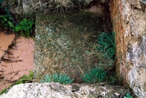 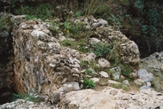 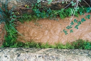 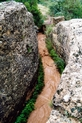 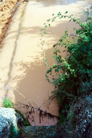 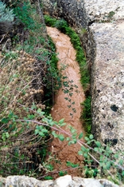 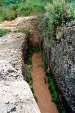 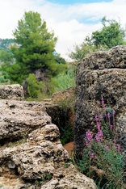 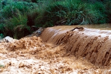 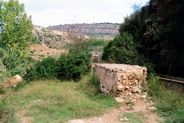 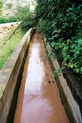 |
| Aquí comienza el canal del acueducto, pero a los pocos metros
(al salir de la roca) se convierte en un canal de hormigón. Es la acequia
mayor de Chelva (el siguiente pueblo en nuestro recorrido) que riega buena
parte de sus zonas de cultivo así como de las de Tuéjar. Este canal de
hormigón se construyó tras una gran riada en los años 80 y la senda
paralela es transitable (hasta con coche) en buena parte de su
recorrido.
Precisamente el color del agua en estas imágenes anteriores se debe a la crecida del Río Chelva (o Río Tuéjar según la cartografía más reciente) a causa de una tormenta la madrugada anterior (al sábado 21 de septiembre de 2002). Lo habitual es que el agua del río esté cristalina y fría especialmente cuanto más nos acercamos a su nacimiento (una zona recreativa llamada el Azud -otro azud- al norte de Tuéjar) donde nadan las truchas. |
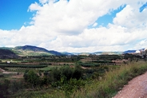 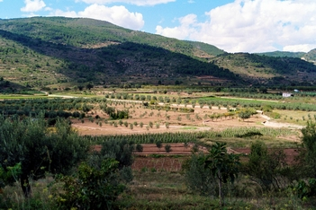 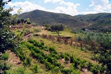 |
| En las imágenes anteriores podemos ver el canal de la acequia mayor atravesando las zonas de cultivo en la ladera izquierda del río al sur de Tuéjar. |
| Cuando el canal, ya en la zona sur del Collado de las Zarabujas -sobre el que se asienta Tuéjar-, gira hacia el noreste (ver mapa anterior) estamos ya en el término municipal de Chelva. Siguiendo por el camino del canal entramos en un valle de cultivos muy tranquilo que se abre hacia Chelva. La primera parte es el Zaé y la segunda la Mozaira. Reciben el nombre de dos alquerías situadas a cierta distancia en la ladera derecha. El río atraviesa el valle por un desfiladero que se va estrechando progresivamente hasta llegar al Molino Puerto nº2, otra zona recreativa ya en las puertas de Chelva. |
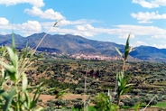 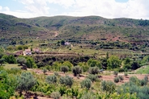 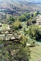 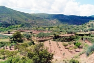 |
| 4 imágenes anteriores: 1.- Chelva desde el Zaé 2.- y 4.- Las casas del Zaé 3.- El río |
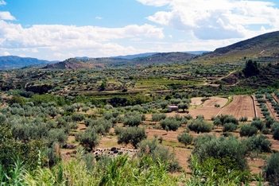 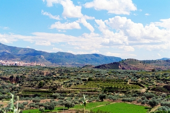 |
| 1.- La Mozaira 2.- Chelva y detrás las montañas que atravesará nuestro canal. |
| Siguiente |